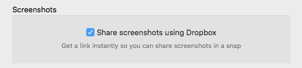
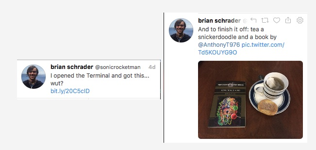

Better Image Sharing with Dropbox
Posted on Fri, 05 Feb 2016 at 02:38 PMI share a lot of pictures and even more screenshots. Until now, I've been using Dropbox's built-in "Share Screen Shots" feature. It's super convenient because it captures the screenshots automatically and puts a Dropbox link in your clipboard. It might sound silly, but once you've gotten used to it, there's no going back.

What's Wrong?
There are a number of problems with sharing these links over social media. If you aren't logged into Dropbox, it put's up a lovely sign-up form instead of the picture, many apps can't show the image inline because they don't know how to scrape the Dropbox page, and the page can sometimes be extremely slow to load. It's super convenient for the poster, but not for the reader.

Enter Alfred
Alfred is an awesome Mac utility that, among other things, replaces the default Spotlight search. It's other main function is managing custom keyboard macros. After my switch to Snippets.today for microblogging, I needed a new way to share images. Snippets doesn't host images for you like Twitter does, and I didn't want to put the images on imgur or some other service, so I fired up Alfred, and got to work.

I now have a simple 2 step macro that takes any Dropbox link and converts it to the raw file URL, and puts it in the clipboard. The only downside is that my screenshot-sharing-workflow is now 2 keystrokes instead of 1, but that's something I think I can live with.1
Here's the Alfred Workflow if you want to try it →
1 But now I can convert any Dropbox share link to it's raw form, not just images. So I guess it's a net positive.